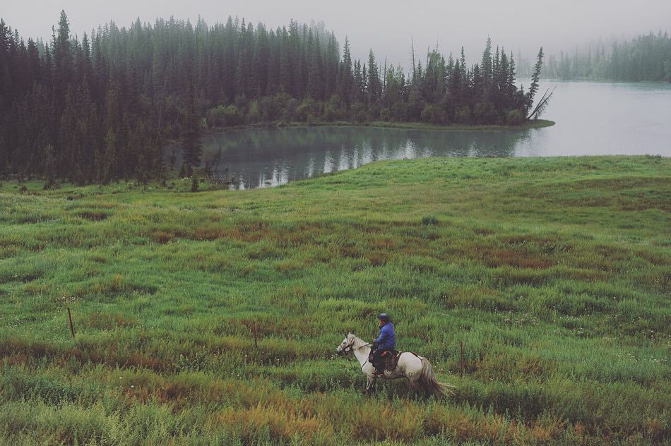

2026 · Xinjiang
北疆十日
9 月 25 日 — 10 月 5 日 · 逆时针环线
11天
3140公里
6 人1 台 7 座
10晚住宿

路线
逆时针 · 高德实测约 3140 km按真实道路走线。空心圆为过夜地，实心点为途经点，虚线为乌尉高速备用线。底图 NASA Blue Marble。
逐日行程
基线 10:00 出发，例外日单独标注| 天 | 起床 | 集合 · 出发 | 落脚 |
|---|---|---|---|
| D1 乌鲁木齐 | — | 中午落地，打车进城 | — |
| D2 可可托海 | 08:30 | 09:20 大堂集合 10:15 机场出发 | 17:30 |
| D3 布尔津 | 09:15 | 10:00 民宿门口集合 10:30 进景区 | 20:00 |
| D4 禾木 | 08:30 | 09:30 大堂集合 10:00 五彩滩 | 15:30 进村 |
| D5 喀纳斯 | 06:40 看日出 不看 09:00 | 07:10 上观景台 10:30 民宿集合出村 | 19:00 |
| D6 克拉玛依 | 09:00 | 10:00 大堂集合出发 | 19:30 |
| D7 赛里木湖 | 08:15 | 09:00 大堂集合出发 | 20:00 |
| D8 伊宁 → 那拉提 | 09:00 | 10:00 大堂集合出发 | 20:30 |
| D9 巴音布鲁克 | 08:30 | 09:30 那拉提闸口集合 | 21:30 |
| D10 独库 | 09:00 | 10:00 酒店门口集合 出发前加油 | 20:30 市区 |
| D11 返程 | 08:30 | 09:20 大堂集合 开车去机场 | 10:00 还车 14:45 起飞 |
蓝色的起床时间可以点，直接设手机闹钟。安卓点了就弹时钟。iPhone 第一次先装一个现成的快捷指令：安装「beijiang-alarm」快捷指令每个人自己的 iPhone 上装一次：弹出预览后点「添加快捷指令」。之后点表里的起床时间，闹钟自动建好，不用再问时间。名字别改，链接靠名字找它。微信里打不开，要在 Safari 里点。按钮没反应就直接下载文件，到「文件」App 里点开它。
装不上，手动建
- 打开「快捷指令」App，点右上角 +
- 添加动作「从输入获取日期」
- 再添加动作「创建闹钟」。点它的时间框，选「选择变量」，选上一步的「日期」（不是手动挑时间）。标签随便写
- 把这个快捷指令命名为「beijiang-alarm」，要一模一样
只有 D5 看日出要早起，其余起床都在 08:15 之后，多数 09:00 左右。到达时间已经算进途中休息和吃饭，是宽松值。北疆日出 08:20–08:40、日落 20:00–20:20，比内地晚约两小时。全天路线导航只带一个途经点（高德链接的限制），中途各站在「总览」里逐站点导航。
待办
按时间排序贴士
费用与门票
六人分摊，旺季估算| 项目 | 总额 | 人均 |
|---|---|---|
| 车：一嗨 GL8 陆尚插混 9 天，租金含保险待补，油、路桥、停车预估 3700 | 约 12300 | 约 2050 |
| 住宿：十晚三间 | 20100 | 3350 |
| 门票、区间车、自驾服务费 | 5760 | 960 |
| 吃饭：150 / 人 / 天 × 11 天 | 9900 | 1650 |
| 合计，不含机票 | 48060 | 8010 |
不含机票。租车已订，金额待补；住宿按预估列，已知 8 晚实付约 16460，桔子、全季未计。